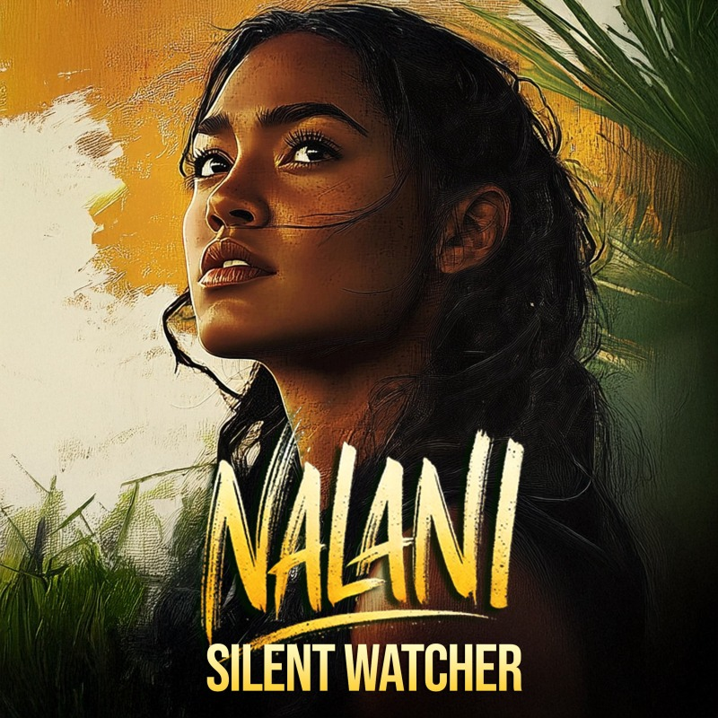

WORLDMATAALA
VOICENALANI
MOVEMENTWith Ash-Stained Skin
Silent Watcher
With Ash-Stained Skin · A cinematic music video and short film from a 19th-century Polynesian historical fiction
The Scene
The overseer sends his hound. Maps are drawn, borders traced, an island marked for a quiet fate, until the jungle answers and war is born beneath the trees.
Lyrics
They send their hound A steady hand
He lands he listens he takes his stand "Keep them quiet
Hold them tight Let them bend don't let them fight
His men move first Their boots sink deep
A broken word A cut too cheap
The runner moves The word is passed
The blades are ready No one asks
The first arrive The first to stand
More will come That's the plan
Maps were drawn Borders traced
My island marked A quiet fate
A man in halls A hand outstretched
A warning laid beneath his breath "They'll come in gold
They'll come with trade They'll write the laws
Then take the blade" His voice was calm
His hands were clean He never thought what it would mean
The jungle burns The sky turns black
No walls left to hold them back
No chains to lock No names to sign
Just bodies sinking into time
They wrote the laws They set the weight
They made the cause Now through the trees we hunt them down
The fire moves No way out now
One turns He lifts his hands
The first to break to understand
Too late…
His body drops The leaves don't stir
The vines reclaim what once was hers
I move in quiet not to mourn
But mark the place where war was born
They called it peace they called it right
But peace with chains is still a fight
Their ledgers bled their hands were clean
While mine were dark from what they'd seen
They taught us names not ours to keep
Built stone on graves too deep to sleep
But in that stone we found a knife
And carved the cost of every life
I walk where maps once crossed in ink
Each border drawn along a brink
They framed the land in silent lies
And thought the soil would never rise
But roots remember trees still hear
The whispered plans the rising fear
And now they tread where we lay still
Not ghosts… but teeth and fire and will
No prayer will stall what's come to pass
Their tide is turning slow and vast
The books they wrote now feed our flame
Their names will die!
We were never yours to tame
Never carved to fit your name
We bent in storms we broke in rain
But not for you not for your chain
Our drums still beat beneath this land
Not bought not sold not held by hand
You took the shore you tried the flame
But the roots still burn and speak my name
They sit in halls with softened tone
Debating lands they've never known
A thousand miles a world away
Still sure their word will make us stay
But out here where the tree-line ends
There's no such thing as making friends
They taught us silence fear and grace
We learned instead to track and chase
Their ships arrive we watch we wait
The tides don't care for foreign fate
And if they land and if they last
They'll meet the echo of the past
You gave us names and dressed our hair
And smiled as if the world was fair
But every "gift" was carved from threat
A kindness paid in steel and debt
Now I stand tall with ash-stained skin
A leader not because of him
But from the soil the salt the night
That raised me fierce enough to fight
You lit the torch we brought the flame
You took our voice we took your name
And now it's carved into the bark
Not yours in ink but ours in mark
We were never yours to win
Not by blood or tongue or sin
We've bled too deep to turn away
This war was born the second day
No crown will pass no flags will wave
We write our story from the grave
And as you flee or as you stay
just know Nalani never walks the other way